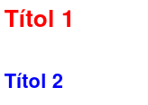

UD 4.2 Introducció a CSS
1 Introducció a CSS
1.1 Introducció
Els fulls d’estil en cascada (Cascading Style Sheets, CSS) són una tecnologia que permet donar format a les dades d’un document, millorant la presentació visual d’una pàgina web i separant el contingut de l’estil. CSS proporciona un conjunt d’eines poderoses per controlar l’aspecte de qualsevol element HTML.
El format que ofereix CSS es pot dividir en tres àrees principals:
Fonts i colors: CSS permet personalitzar fonts, colors, grandàries de text, estils de línia, i altres propietats que afecten el contingut visible.
Distàncies i marcs: Aquesta àrea controla l’espai al voltant i dins dels elements.
Layout: CSS també permet determinar com es distribueixen i col·loquen els elements a la pàgina web.
Abans de la popularització dels CSS, en versions prèvies
d’HTML, era comú utilitzar etiquetes i atributs específics
per modificar l’aspecte visual dels elements, com ara
<font> per personalitzar tipus de lletra
o <center> per alinear contingut. Aquest
enfocament, però, dificultava la separació entre contingut i
estil, fent que les pàgines foren més complexes de mantenir
i menys flexibles.
Amb l’arribada de CSS, es va establir un estàndard que permet separar clarament el contingut HTML del seu estil visual, millorant l’eficiència, la consistència i l’accessibilitat en el desenvolupament web.
<!-- Aquest exemple és incorrecte hui en dia -->
<body>
<h1><font color="red" face="Arial" size="5">Titular de la pàgina</font></h1>
<p><font color="gray" face="Verdana" size="2">Un paràgraf de text.</font></p>
<p><font color="gray" face="Verdana" size="2">Un altre paràgraf de text.</font></p>
</body>Abans de l’adopció generalitzada dels fulls d’estil en cascada (CSS), gestionar l’aparença dels llocs web amb moltes pàgines era una tasca extremadament laboriosa. Aquesta complexitat provenia del fet que qualsevol canvi en el format requeria una edició manual element per element i pàgina per pàgina.
1.1.1 Avantatges del CSS
- Permet separar el contingut de la seva presentació.
- Permet definir les regles de presentació d’un document a partir de les etiquetes que conté.
- Permet aplicar les regles de presentació a múltiples pàgines.
1.1.2 Versions
- CSS 1 (1996)
- CSS 2 (1998)
- CSS 2.1 es finalitza al 2011.
- CSS 3 (versió actual)
1.2 Aplicació dels estils
Aplicar fulls d’estil CSS a HTML es pot fer de tres formes:
- CSS integrades en un element HTML5: Amb
l’atribut
styleen etiquetes html. - CSS internes al document: Amb una
etiqueta
<style>. - CSS externes al document: Amb un arxiu
extern
.cssenllaçat amb l’etiqueta<link>.
1.2.1 CSS Integrats en una Etiqueta HTML
Els CSS integrats, també coneguts com a inline styles, permeten especificar regles CSS directament dins d’una etiqueta HTML. Aquesta tècnica assigna estils a elements individuals utilitzant l’atribut style.
Exemple de CSS integrat:
<p style="color: blue; font-size: 16px;">Aquest paràgraf té un estil integrat.</p>En aquest exemple, el text del paràgraf apareixerà en blau i tindrà una mida de lletra de 16 píxels.
Tot i que és la forma menys recomanada de definir estils en CSS, els CSS integrats poden ser útils en determinades situacions, com per exemple:
- Proves ràpides: Quan cal aplicar un canvi visual temporal o fer una prova ràpida d’un estil.
- Estils únics: Per elements molt específics que no es repetiran en cap altre lloc del lloc web.
- Correccions puntuals: Quan necessites una solució ràpida sense alterar fitxers CSS externs.
Exemple: Estil definit en una etiqueta:
<p style="color:red">
Això és un paràgraf de color roig
</p>
<p style="color:blue">
Això és un paràgraf de color blau
</p>El resultat serà:
Mitjançant l’etiqueta
<span> i l’atribut
style.
<p>
Això és un paràgraf amb vàries paraules
<span style="color:green">de color verd</span>. Fàcil, no?
</p>El resultat serà:
Mitjançant l’etiqueta
<div> i l’atribut
style.
<div style="color:blue; font-weight:bold">
<h3>Aquestes etiquetes van en <em>blau i negreta</em></h3>
<p>
Seguim dins del DIV, amb el mateix estil.
</p>
</div>El resultat serà:
1.2.2 CSS Interns al Document HTML
Els CSS interns permeten definir regles d’estil dins del mateix document HTML, però separats del contingut principal. Aquesta tècnica és útil per aplicar estils a una única pàgina web de manera centralitzada, sense haver de repetir regles per a cada element.
Les regles CSS s’escriuen dins de l’etiqueta
<style> que es col·loca
a la secció <head> del
document HTML.
Els estils definits amb CSS interns afecten tots els elements de la pàgina que compleixen les regles especificades.
Aquesta tècnica no és òptima per llocs web grans, ja que els estils no es poden reutilitzar fàcilment en altres pàgines. Això pot complicar el manteniment i reduir l’eficiència del codi.
Els CSS interns són adequats per a projectes menuts o llocs web amb una sola pàgina, on no és necessari compartir estils amb altres documents.
Exemple:
<!DOCTYPE html>
<html lang="ca">
<head>
<title>Exemple de CSS intern</title>
<style>
body {
font-family: Arial, sans-serif;
background-color: #f0f0f0;
color: #333;
}
h1 {
color: #0056b3;
text-align: center;
}
p {
margin: 20px;
line-height: 1.6;
}
</style>
</head>
<body>
<h1>Títol amb CSS intern</h1>
<p>Aquest és un paràgraf formatat amb regles CSS definides internament.</p>
</body>
</html>Resultat:
El principal inconvenient dels CSS interns està en la seua dificultat per reutilitzar estils, ja que els estils només són accessibles des del document en què estan definits, cosa que limita la seva utilitat en llocs web amb múltiples pàgines.
Els CSS interns són una bona opció en escenaris com: - Prototips ràpids: Quan necessites dissenyar i provar ràpidament una pàgina sense preocupar-te per múltiples fitxers. - Llocs d’una sola pàgina: Per projectes simples, on la compartició d’estils no és necessària. - Estils específics temporals: Per aplicar regles CSS úniques a una pàgina concreta sense afectar altres pàgines.
1.2.3 CSS Externs
Els CSS externs són una manera de definir estils en un fitxer separat del document HTML. Aquest mètode permet aplicar estils de manera centralitzada i consistent a totes les pàgines d’un lloc web.
Un o varis fitxers CSS amb els estils definits poden ser compartit per totes les pàgines d’un lloc web, assegurant la consistència visual i simplificant el manteniment.
Aquest enfocament segueix les bones pràctiques de desenvolupament web, mantenint el contingut (HTML) i l’estil (CSS) en fitxers separats.
Els CSS externs es guarden en un fitxer específic amb
extensió .css, on es
defineixen totes les regles d’estil del lloc web.
Avantatges dels CSS externs:
- Reutilització d’estils: Es poden aplicar els mateixos estils a múltiples pàgines, evitant duplicació de codi.
- Facilitat de manteniment: Qualsevol canvi realitzat en el fitxer CSS s’aplica automàticament a totes les pàgines que el tinguin enllaçat.
- Organització millorada: Manté el codi HTML net i centrat en el contingut.
Aquest sistema és el més adequat en la majoria dels casos, especialment per llocs web amb múltiples pàgines.
Exemple de fitxer CSS:
Un fitxer CSS típic pot incloure regles per estilitzar diversos elements HTML. Per exemple:
p {
font-size: 12pt;
font-family: Arial, Helvetica, sans-serif;
font-weight: normal;
}
h1 {
font-size: 36pt;
font-family: Verdana, Arial, sans-serif;
text-decoration: underline;
text-align: center;
background-color: teal;
}
body {
background-color: #006600;
color: white;
}Per utilitzar els CSS externs, cal enllaçar el fitxer CSS
al document HTML mitjançant l’etiqueta
<link>, que es col·loca
dins de la secció <head>
del document.
<head>
<link rel="stylesheet" href="estil.css">
</head>rel="stylesheet": Indica que l’enllaç és un full d’estils.href="estil.css": Especifica la ubicació o el nom del fitxer CSS que conté les regles d’estil.
Els CSS externs són la millor opció per llocs web professionals, ja que promouen la coherència, simplifiquen el manteniment i permeten escalar fàcilment el projecte. Amb aquest enfocament, els desenvolupadors poden garantir un codi més net, organitzat i eficient.
1.3 Regles CSS
Les regles CSS són l’element fonamental que defineix com es representaran les diferents etiquetes HTML d’una pàgina web. Aquestes regles permeten controlar l’aspecte visual del contingut, com ara el color, la mida de la lletra, els marges, i moltes altres propietats.
Una regla CSS típica es compon de tres parts:
Selector
Indica a quin(s) element(s) HTML s’aplicaran les regles d’estil. Per exemple:pper paràgrafs.classeper elements amb una classe específica#idper un element amb un ID específic
Propietat
Defineix l’aspecte que es vol modificar (per exemple, color, font-size, background-color).Valor
Especifica el detall de la propietat (per exemple, red, 16px, #ffffff).
Exemple bàsic:
p {
color: blue;
font-size: 14px;
}- Selector:
p(paràgrafs) - Propietat 1:
color, amb valorblue - Propietat 2:
font-size, amb valor14px
Si volem especificar més d’una propietat dins d’una regla CSS, hem de seguir aquestes indicacions:
Dins de les claus
{}
Les propietats i els seus valors s’especifiquen dins de les claus que segueixen el selector.Separades per punt i coma (
;)
Cada propietat es separa de la següent amb un punt i coma per garantir la claredat.Terminar amb punt i coma, recomanat
Tot i que no és obligatori posar el punt i coma després de l’última propietat, és una bona pràctica fer-ho, ja que facilita afegir noves propietats sense errors.
Exemple amb múltiples propietats:
h1 {
color: teal;
text-align: center;
font-size: 32px;
margin-top: 20px;
}Aquí teniu un exemple visual de com es construeix una regla CSS:
Consells de bones pràctiques:
- Escriu regles clares i senzilles per facilitar el manteniment del codi.
- Utilitza noms de selectors significatius, com classes o IDs que descriguin la seva funció o context.
- Organitza les regles CSS amb comentaris o agrupant-les per seccions, especialment en projectes grans.
- Organitza les regles de més general a més particular: body, etiquetes de bloc, etiquetes en línia, classes, id’s…
1.3.1 Aplicació de Regles en Cascada
La “C” de CSS significa “Cascading”, que es tradueix com “en cascada”. Aquest principi implica que els estils definits poden provenir de diverses fonts (externes, internes i integrades en etiqueta) i es resolen en funció d’una jerarquia de prioritats.
Quan hi ha múltiples definicions d’estil per al mateix element, s’aplica la següent jerarquia de menor a major prioritat:
Estils predeterminats del navegador
Els navegadors defineixen estils bàsics per a totes les etiquetes HTML si no s’especifica cap estil personalitzat.Fulls d’estil externs
Són fitxers CSS separats, enllaçats al document HTML amb l’etiqueta<link>.Fulls d’estil interns
Es defineixen dins del mateix document HTML, utilitzant l’etiqueta<style>situada a la secció<head>.Estils integrats
Es defineixen directament en una etiqueta HTML utilitzant l’atributstyle. Aquests tenen la prioritat més alta perquè estan associats directament amb l’element.
Exemple: Conflicte entre estils:
<html>
<head>
<style>
h1 {
color: blue;
}
</style>
</head>
<body>
<h1 style="color:red">Títol</h1>
</body>
</html>De quin color es veurà el text del títol, roig o blau?
1.3.2 Selectors Repetits
Quan una propietat es defineix més d’una vegada per al mateix selector, es considera vàlid el darrer valor trobat en el codi. Això passa fins i tot dins del mateix full d’estil.
Exemple:
h1 {
font-family: Arial;
color: blue;
}
h1 { color: red; }Resultat: Els elements
h1 es veuran de color
roig, ja que és l’última definició trobada
per al selector.
1.3.3 Herència en CSS
Els estils CSS poden ser heretats automàticament d’un element contenidor a un element fill. Aquesta característica permet que els estils definits en un element superior afecten tots els elements fills, sempre que aquests no defineixen un estil diferent per a la mateixa propietat.
Exemple d’Herència:
body {
font-family: Arial;
color: red;
background-color: green;
}
h2 {
font-style: italic; /* Cursiva */
}- Explicació:
- El cos del document (
body) tindrà text de color vermell i un fons verd. - Les etiquetes
h2, com a elements fills, heretaran el tipus de lletra i el color delbody. A més, afegiran l’estil italic definit específicament per a elles.
- El cos del document (
1.4 Comentaris
CSS permet incloure comentaris entre les seves regles. Els navegadors ignoren aquests comentaris. Són molt adeqüats per a estructurar els blocs d’elements en els fulls CSS externs.
S’indiquen mitjançant els caràcters
/* i
*/ i poden ocupar vàries
línies.
Exemple:
/* Això és un comentari en CSS */Alerta! El comentaris s’envien al navegador juntament amb la resta d’estils, per tant no és convenient incloure dades confidencials.
1.5 Propietats CSS bàsiques
CSS defineix moltes propietats i a cada versió s’afegeixen més.
Les propietats poden ser agrupades en quatre grans grups:
- Propietats de tipus de lletres
- Propietats de text
- Propietats de fons de pantalla
- Propietats de caixes
1.5.1 Propietats de tipus de lletra
El tipus de lletra determina la font i l’estil dels textos.
1.5.1.1 Famílies de fonts
En CSS hi ha cinc famílies de tipus de lletra genèriques:
- Els tipus de lletra serif tenen un petit traç a les vores de cada lletra. Creen una sensació de formalitat i elegància.
- Els tipus de lletra sans serif tenen línies netes (no hi ha traços menuts). Creen un aspecte modern i minimalista.
- Tipus de lletra monospace: ací totes les lletres tenen la mateixa amplada fixa. Creen un aspecte mecànic. Útils per a representar codi.
- Els tipus de lletra cursive imiten l’escriptura humana.
- Els tipus de lletra fantasy són tipus de lletra decoratius o lúdics.

La propietat font-family
determina la font del text. S’indiquen vàries fonts per si
el navegador de l’usuari no té la primera d’elles, usar la
següent. La última font hauria de ser la familia:
.p1 {
font-family: "Times New Roman", Times, serif;
}
.p2 {
font-family: Arial, Helvetica, sans-serif;
}1.5.1.2 Estils de font
La propietat font-style
s’utilitza principalment per especificar text en
cursiva.
Aquesta propietat té tres valors:
normal: el text es mostra amb normalitatitalic: el text es mostra en cursivaoblique: el text és “inclinat” (és molt semblant a la cursiva)
p.normal {
font-style: normal;
}
p.italic {
font-style: italic;
}
p.oblique {
font-style: oblique;
}La propietat font-weight
s’utilitza principalment per especificar el grossor de la
font:
p.normal {
font-weight: normal;
}
p.thick {
font-weight: bold;
}La propietat font-variant
s’empra per forçar que un text concret es mostre en
majúscules amb mida de minúscules, el que es coneix com a
versaletes.
Els seus valors són normal
o small-caps:
p.normal {
font-variant: normal;
}
p.small {
font-variant: small-caps;
}1.5.1.3 Mida del text
La propietat font-size
estableix la mida del text.
La mida del text és important en el disseny web.
No s’ha d’utilitzar ajustaments de mida de lletra perquè
els paràgrafs semblen encapçalaments o els encapçalaments
semblen paràgrafs. Feu servir sempre les etiquetes HTML
adequades, com ara
<h1> - <h6> per
als encapçalaments i <p>
per als paràgrafs.
Nota: si no especifiqueu una mida de lletra, la mida predeterminada del text normal dels paràgrafs és de 16 píxels (16 px=1 em).
h1 {
font-size: 40px;
}
h2 {
font-size: 1.875em;
}
h3 {
font-size: 110%;
}Una solució que funciona en tots els navegadors és
establir una mida de font predeterminada en percentatge per
a l’element <body> i
especificar la resta de mides amb em:
body {
font-size: 100%;
}
h1 {
font-size: 2.5em;
}Unitats:
px: píxelsem: Relatiu a la mida de la font de l’element (2em significa 2 vegades la mida de la font actual)%: percentatge en relació a la mida de l’element parevw: viewport view, la mida canvia en relació a la mida de la finestra.Valors fixes: xx-small, x-small, small, medium, large, x-large i xx-large. Aquests no necessiten un número i assignen sempre la mateixa mida.Valors relatius: usant smaller (més menut) i larger (més gran) aconseguim que la tipografia augmente o disminuïsca la seva mida respecte al seu valor original.
1.5.1.4 Propietat
font
Finalment, la propietat
font és una propietat ràpida
per a especificar totes les propietats de font en una
línia:
p {
font: italic bold 30px Georgia, serif;
}Les propietats en ordre són: font-style,
font-variant, font-weight,
font-size/line-height,
font-family.
Els valors de font-size i
font-family són obligatoris.
Si falta un dels altres valors, s’utilitza el seu valor per
defecte.
1.5.2 Propietats de text
1.5.2.1 Colors
La propietat color
s’utilitza per definir el color del text. El color
s’especifica amb:
- un nom de color (red, blue…)
- un valor hexadecimal, com “#ff0000”
- un valor RGB, com “rgb(255,0,0)”
Consulteu els valors de color CSS per obtenir una llista completa de possibles valors de color.
El color de text predeterminat per a una pàgina es defineix al selector de cos.
body {
color: blue;
}
h1 {
color: green;
}La propietat
background-color defineix el
color de fons d’un element.
body {
background-color: lightgrey;
}1.5.2.2 Alineació
La propietat text-align
s’utilitza per establir l’alineació horitzontal d’un
text.
h1 {
text-align: center;
}
h2 {
text-align: left;
}
h3 {
text-align: right;
}
div {
text-align: justify; /* Text alineat a esquerra i dreta */
}La propietat vertical-align
estableix l’alineació vertical d’un element. És util per a
imatges i text de taules.
img.a {
vertical-align: baseline; /* Valor per defecte */
}
img.b {
vertical-align: top; /* Dalt */
}
img.c {
vertical-align: bottom; /* Baix */
}
img.d {
vertical-align: middle; /* Centrat verticalment */
}1.5.2.3 Decoració del text
La propietat
text-decoration-line
s’utilitza per afegir una línia de decoració al text:
subratllat, sobreratllat, tatxat…
La propietat
text-decoration-color
s’utilitza per establir el color de la línia de
decoració.
La propietat
text-decoration-style
s’utilitza per definir l’estil de la línia de decoració:
contínua (solid), doble (double),
puntejada (dotted), ratlles (dashed)…
La propietat
text-decoration-thickness
s’utilitza per establir el gruix de la línia de
decoració.
Per últim, la propietat
text-decoration s’usa per a
establir totes les propietats.
h1 {
text-decoration-line: overline;
text-decoration-color: red;
text-decoration-style: solid;
text-decoration-thickness: 5px;
}
h2 {
text-decoration-line: line-through;
text-decoration-color: blue;
text-decoration-style: double;
text-decoration-thickness: 25%;
}
h3 {
text-decoration-line: underline;
text-decoration-color: green;
text-decoration-style: dotted;
}
p {
text-decoration: underline red double 5px;
}
a {
text-decoration: none; /* Elimina el subratllat dels enllaços */
}1.5.2.4 Interlineat i espaiat
La propietat line-height
estableix l’espai entre línies. Es pot especificar amb les
unitats de mesura vistes fins ara:
p {
line-height: normal;
}
blockquote {
line-height: 1.5em;
}
pre {
line-height: 80%;
}La propietat letter-spacing
serveix per a augmentar o disminuir l’espai entre caràcters
d’un text:
h1 {
letter-spacing: 2px;
}
h2 {
letter-spacing: -1px;
}text-indent serveix per a
indentar la primera línia d’un text, l’anomenat sagnat
francès. Permet valor positius (sagnat cap a la dreta)
i negatius (sagnat cap a l’esquerra):
p {
text-indent: 50px;
}
h1 {
text-indent: -2em;
}1.5.3 Imatges de fons
Amb CSS podem posar imatges de fons de les nostres
pàgines. Ho podem fer en un element, com
<p> o <h1>, o a tota
la pàgina en el <body>.
Les propietats són:
background-color: el color de fonsbackground-image: especifica la imatge de fonsbackground-repeat: el mode de repetició del fons:repeat,repeat-x,repeat-y,no-repeat.background-position: la posició de la imatge de fons:left,right,top,bottom.background-attachment: per a establir si la imatge de fons es mou amb la pàgina (scroll) o es queda estàtica (fixed).background: per a establir totes les propietats de fons.
body {
background-image: url("img_tree.png");
background-repeat: no-repeat;
background-position: right top;
background-attachment: scroll;
}body {
background: #ffffff url("img_tree.png") no-repeat right top;
}1.6 Selectors
Els selectors defineixen quin és l’element de la pàgina que modifiquem des del CSS.
Disposem de diversos tipus de selectors:
- Selectors de tipus o etiqueta HTML
- Selectors de classe
- Selectors ID
- Selectors descendents
- Selectors pseudo-classe: links
- Selectors pseudo-elements
- Selector universal (*)
1.6.1 Selectors de tipus o etiqueta
Seleccionen els elements de la pàgina a partir de la seva etiqueta HTML
HTML:
<body>
<h1> Títol 1 </h1>
<h2> Títol 2 </h2>
</body>CSS:
h1 { color: red; }
h2 { color: blue; }Visualització:

1.6.2 Selectors de classe (.)
Els selectors de classe seleccionen
totes les etiquetes que tinguen el mateix atribut
class. S’utilitza el punt
. precedit del nom de la classe.
Serveixen per declarar estils que s’utilitzaran varies vegades en la mateixa pàgina.
HTML:
<body>
<p class="destacat">Primer paràgraf</p>
<p>Segon paràgraf</p>
</body>Definim una classe donant-li un nom que podreu utilitzar en qualsevol altra etiqueta. S’escriuen darrere d’un punt.
CSS:
.destacat { color: red; }Visualització:
Només els paràgrafs de classe destacat es mostraran de color vermell.
Podem qualificar una etiqueta amb una classe, de manera que les regles s’aplicaran només als elements que tinguen eixa etiqueta i eixa classe:
h2.destacat { color: red; } /* S'aplicarà només als h2 que siguen de la classe destacat */Varies etiquetes de la pàgina poden utilitzar el mateix valor en l’atribut
class.
La mateixa etiqueta pot tindre vàries classes, separant els noms per espais:
<p class="destacat avis">Primer paràgraf</p>1.6.3 Selectors ID (#)
Els selectors ID seleccionen qualsevol
etiqueta que tingui l’identificador especificat en l’atribut
id. S’utilitza el símbol
#.
Serveixen per declarar estils que s’utilitzaran UNA SOLA vegada.
HTML:
<body>
<p>Xeresa</p>
<p id="comarca">La Safor</p>
</body>Definim un id donant-li un nom que podreu utilitzar en qualsevol altra etiqueta.
CSS:
#comarca { color: red; }Visualització:
Al igual que amb les classes, podem qualificar una etiqueta amb un id, de manera que les regles s’aplicaran només als elements que tinguen eixa etiqueta i eixe id:
nav#menu { color: red; } /* S'aplicarà només als elements nav que tinguen el id menu */El mateix valor en l’atribut
idNO es pot repetir en dos etiquetes de la pàgina.
1.6.4 Selectors descendents
Selecciona les etiquetes que es troben dins (descendents) d’una altra d’etiqueta. S’especifica indicant els noms dels elements descendents a continuació i separats per un espai de l’element pare.
HTML:
<body>
<p>
Consulteu la pàgina del <a href="www.w3.org">W3C</a>
</p>
</body>CSS:
p a { color: red; }Només els enllaços que siguen descendents d’un element
p seran de color roig.
Visualització:
1.6.5 Selectors fills
Seleccionen els elements que són fills, o descendents
directes, d’un altre element. S’indiquem amb el símbol
>:
div > p { color: red; }Aquest exemple seleccione els elements p que
són descendents directes de elemens div:
<div> <p> Aquest element es seleccionaria </p> </div>
<div> <section> <p> Aquest element NO es seleccionaria </p> </section> </div>1.6.6 Grups de selectors
Permeten assignar el mateix estil a diversos selectors.
S’utilitza la coma , per a separar els
selectors.
No són en realitat selectors, sinó una manera abreujada de definir estils.
En aquest exemple, assignem les mateixes propietats a
h1, h2 i p:
h1, h2, p {
font-family: Trebuchet, sans;
color: olive;
margin-left: 30px;
}1.6.7 Selectors pseudo-classe: enllaços
CSS permet aplicar diferents estils al mateix enllaç en funció del seu estat.
:link: Enllaços que encara no han sigut visitats:visited: Enllaços que ja han sigut visitats:hover: Enllaç que té el punter de ratolí a sobre:active: Enllaç que està prement l’usuari
a:hover {
text-decoration: none;
background-color: red;
color: #FFF;
}1.6.8 Selectors pseudo-elements
S’afegeixen a un selector per definir l’estil d’una part de l’element.
::first-letter: Selecciona la primera lletra::first-line: Selecciona la primera línia::selection: Selecciona allò que l’usuari ha seleccionat amb el ratolí.
HTML:
<body>
<p>Primer paràgraf</p>
<p>Segon paràgraf</p>
</body>CSS:
p::first-letter { font-size: 200%; }Visualització:
CSS3 afegeix molts més pseudo-elements.
1.6.9 El selector universal (*)
Selecciona totes les etiquetes del document.
HTML:
<body>
<h1> Títol principal </h1>
<p>Primer paràgraf </p>
<p>Segon paràgraf </p>
</body>CSS:
* {
color: red;
}Visualització: